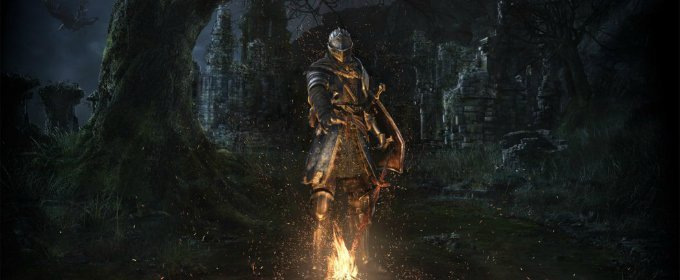

Neil Druckmann de The Last of Us Part II: “Tratamos temas fuertes no para provocar, sino porque el juego lo necesitaba”

Con el primer juego estábamos muy limitados con el diseño que podíamos hacer por el hardware. También teníamos límites de cuántos enemigos podemos tener en pantalla o cuántas animaciones. Lo que la PS4 permite, como nos dimos cuenta en Uncharted 4, es que podemos hacer secciones más amplias. No quisimos hacer un juego de mundo abierto porque se trata todo de la historia, y no queríamos que se pierda la tensión. Ponele, si tenés que salvar a alguien pero hay 10 actividades en el mapa, no te genera el ambiente correcto.
Pero, en algún momento quisimos hacer cosas como, por ejemplo, que Ellie se siente perdida, así que está en el centro de Seattle. Andá y explorá, no sabés a donde tenés que ir, pero acá hay un par de locaciones interesantes así que subite al caballo y fijate qué hay por ahí. En otros momentos que queremos subir la tensión usamos mapas más chicos y claustrofóbicos, o usar eventos guionados a lo Naughty Dog, pero todo está armado para evocar un cierto sentimiento del jugador que se corresponda a lo que siente Ellie.
¡Gustavo es increíble! Es un tipo que para mí es un amigo, y en este segundo juego fue parecido al primero en sentido en que antes de que hubiera nada construido, nos pudimos sentar con él. Le dijimos “bueno, la historia va así, estos son los personajes, y esto es lo que ocurre” para que empiece a pensar en temáticas. Él no es que haga canciones sino que escribe a partir de ideas, y de ahí le salen cosas relacionadas a lo que le contamos.
A la vez, estas piezas son poderosas y nos inspiran. Cuando escribía el guión tenía una carpeta con el soundtrack del juego y lo ponía de fondo. No todo lo que hizo funciona así que nos sentamos a charlar acerca de eso, cuál es el tono de la escena, si queremos que algo suene más urgente o rápido… lo que hicimos de nuevo es usar un segundo compositor, a Mac Quayle de Mr. Robot, y él tiene esta vibra tensa cuando compone. Él hizo nuestra música de combate, por ejemplo, y lo que pasó fue que Gustavo y Mac componían sobre las piezas del otro así que tenemos esta colaboración de músicos muy diferentes.
Este es nuestro juego más ambicioso hasta ahora. En lo que a dimensión respecta ni siquiera entra en un solo blu-ray, necesitamos dos. Por eso tomamos la dura decisión, porque nuestro equipo del multiplayer es muy ambicioso también, de dejarlo de lado. Pusimos todo nuestro esfuerzo en la historia y por eso el juego es sólo single-player. .
Y, los Fireflies son parte del mundo del juego. Debido a los hechos del primer juego la organización se desarmó. Ellos no existen del modo que existían antes, pero igual nos vamos a enterar que no son el único grupo de resistencia activo en el mundo. Hay más grupos que son similares pero diferentes en el sentido que expulsaron a los militares de la zona de cuarentena pero sus metas y el modo en que operan son distintos a los de los Fireflies.

Lo más difícil fue encontrar una historia que tenga un peso similar y resuene de forma parecida al primer juego. Fuera de encontrar la historia, todo es difícil. Una vez que la tenés, es re complicado armar un juego así de grande. Lo que nos decíamos en el estudio es “si esto nos sale, va a ser increíble, va a resonar con la gente. ¿Nos saldrá?”. Esto se convirtió en un desafío para el equipo, y así salió el juego más grande que hayamos hecho.
Cuando arrancamos ni sabíamos cuánto tiempo nos iba a tomar y ya llevamos como 5 años, o lo que sea hasta que salga. Ahora que estamos terminando se siente que todas las piezas encajan. Es memorable de una forma que todavía no les puedo contar.

Después de jugar la build actual, nos quedamos con la idea de que tiene un foco en la conexión humana, en lo emocional. En los trailers aparece Ellie con su novia, pero también hay cuestiones con drogas… ¿Esperan controversia por la temática del juego, por tener una protagonista homosexual?
Supongo que en diferentes partes del mundo diferentes cosas son controvertidas. Ponele, en Japón capaz que la violencia sea un tema. En otro lado, capaz algún desnudo, o las drogas. Nos metimos con todas estas cuestiones pero no por provocar, sino porque el juego lo necesitaba. Honestamente, no pensamos mucho si algo es controvertido o no. Nomás pensamos cosas que queremos jugar, el tipo de relación que queremos mostrar.
Buscamos cosas que no hayamos visto, que sean divertido de explorar. Ponele, pasar un par de niveles explorando el romance entre personajes en un juego de acción sobre buscar justicia y que es así de violento es interesante porque si fuera todo violencia se volvería un embole. Pensamos qué otras historias podemos contar en este juego que no se hayan visto, porque a veces los jugadores quieren que contemos historias que no nos interesan.

Y, la historia es re emocionante. El sistema de animación, porque nos propusimos hacer el mejor third person shooter y el modo en que Ellie puede tirarse al piso agacharse, y moverse sin cortes nos salió super intuitivo sin perder realismo. Eso fue re difícil a nivel técnico pero para esto usamos un sistema construido por nosotros que se llama Motion Magic. También la luz. Los juegos son muy buenos para mostrar luz directa, pero la luz indirecta es otra cosa. Por ejemplo, cuando estás en Seattle y está nublado, pudimos darle una sutileza a la luz y crea sombras y ambientes muy grosos que no vemos en muchos juegos porque es muy difícil de hacer. En un momento pensamos que no íbamos a poder, pero le pusimos todo y nos salió bien.

De una. Quisimos hacer que los enemigos sean más amenazantes, nuestro proceso fue “¿cómo hacemos que los humanos den más miedo?” y los hicimos más inteligentes, en niveles más grandes… usan su sentido de la vista y oído para buscarnos y ahora sumamos el olfato. Hay un grupo que cría y entrena perros para encontrar a quienes se metan en su territorio. En este juego, Ellie se infiltra, y mecánicamente está buenísimo porque te tenés que mantener en movimiento porque estás dejando un rastro. No te podés quedar quieto o los perros te van a oler. Fue re interesante cómo cambió los mapas pero nos hizo sentir re mal porque por el motivo que sea, matar perritos se siente peor que matar humanos. Cuando el perrito sufre tenemos una respuesta emocional inmediata.
Tuvimos una charla larga con el equipo acerca de qué tan lejos estabamos dispuestos a ir con esto, onda “¿Lo mostramos que sufre? ¿Más lento? ¿Más largo?” y decidimos que parte de la esencia del juego es qué tan lejos irá Ellie así que vos como jugador deberías estar forzado a tomar estas decisiones. Lo que sí voy a decir es que no tenés por qué matar a ningun perrito en la demo, por ejemplo. Hay escenarios completos que podés pasar sin matar a nadie, pero hay otros momentos que queremos que interactúes con la violencia y despertar alguna emoción.

Bruce es increíble. Perderlo fue doloroso como un divorcio, pero decidió irse y hacer algo diferente. Lo extraño re seguido, y su partida fue buena y mala. Mala en el sentido que perdí un compañero, lo veía más que a mi familia, y lo extraño. Pero, cuando alguien se va le da la oportunidad a otra gente de tomar su lugar – en este caso, gente del equipo de Uncharted 4 que trabajaron muy duro y ahora pueden traer su visión y sus ideas al juego. Crear la confianza que teníamos con Bruce toma tiempo, pero permite que otros crezcan. ¡Alguna vez yo me voy a ir y alguien me va a reemplazar! Es el círculo de la vida en Naughty Dog.
Ellie no conoció el mundo que nosotros conocimos. Ella creció en el mundo posterior al brote. Debió crecer rápido, pero de muchos modos en el primer juego todavía era chica. Colecciona cómics, hace chistes, es inocente… la secuencia donde por primera vez mata a alguien es fuerte por eso. Experimenta un trauma bastante fuerte en el primer juego que ahora trata de superar. Tiene mucha ira dentro de ella, que está esperando salir, y cuando pasan cosas y le hacen daño, algo se enciende y quiere corregir lo que pasa. Pero, su modo de corregir es “ojo por ojo”. Esto la afecta y la cambia, afecta sus relaciones con los que la rodean, pero no te voy a contar más para no hacer spoilers.

La historia en Naughty Dog es lo más importante… pero quiero separar historia de guión, ponele. La historia es cuando está todo armado. El guión es más específico y relacionado al diálogo o el momento a momento del juego. El modo en que trabajamos es que tenemos un boceto con tarjetas que escribimos en la oficina, y que nos muestre la estructura completa tan pronto como se pueda, y ahí decidir qué hace que esto sea único para un video juego. “¿Cómo hacemos que esto sea jugable?”. A veces pensamos cosas tipo “esto está bueno, pero es para una película, no un juego”. Otras veces el proceso es inverso, tipo “tenemos esta mecánica, cómo la ponemos en el juego”, y hacemos un segmento donde pase algo con eso o cambiamos lo que haga falta. La jugabilidad y el guión tienen que casarse, y de ahí sale ese sabor único. Por ejemplo, el momento que controlas a Ellie en el primer juego agarró por sorpresa a muchos jugadores, pero si vieras una película no dirías eso. Hay una empatía única en este medio, y vamos a explotar eso, cosas que fuera de un videojuego no tendrían el mismo impacto.
Ese período es importante y lo vamos a ver de muchos modos diferentes. A veces los personajes van a hablar de eso y van a haber referencias más directas… pero es todo lo que te puedo decir.
La demo que tenemos acá no está balanceada, seguramente es algo entre normal y hard, pero no sé porque todavía no nos ocupamos de eso. Queremos que el juego se ajuste a diferentes personas con diferentes necesidades y que no importa en qué dificultad juegues, sientas la tensión porque es re importante para la historia de Ellie.